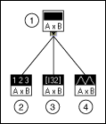
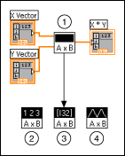

Polymorphic VIs adapt to different data types. A polymorphic VI is a collection of VIs with the same connector pane patterns. Each VI in the collection is an instance of the polymorphic VI, and each instance has at least one input or output terminal that accepts a different data type than in the other instances.
For example, the Read Key VI is polymorphic. Its default value terminal accepts Boolean; double-precision, floating-point numeric; 32-bit signed integer numeric; path; string; or 32-bit unsigned integer numeric data.
For most polymorphic VIs, the data types you wire to the inputs of the polymorphic VI determine the instance to use. If the polymorphic VI does not contain an instance compatible with that data type, a broken wire appears. If the data types you wire to the polymorphic VI inputs do not determine the instance to use, you must select the instance manually. If you manually select an instance of a polymorphic VI, the VI no longer behaves as a polymorphic VI because it accepts and returns only the data types of the instance you select.
To select the instance manually, right-click the polymorphic VI, select Select Type from the shortcut menu, and select the instance to use. You also can use the Operating tool to click the polymorphic VI selector, shown as follows, and select an instance from the shortcut menu.
Right-click the polymorphic VI on the block diagram and select Visible Items�Polymorphic VI Selector from the shortcut menu to display the selector. To change the polymorphic VI to accept all the handled data types again, right-click the polymorphic VI and select Select Type�Automatic from the shortcut menu or use the Operating tool to click the polymorphic VI selector and select Automatic from the shortcut menu.
Build polymorphic VIs when you perform the same operation on different data types and the operation must be implemented differently across data types. If the operation can be implemented in similar ways for different data types without significant customization for a specific data type, build malleable VIs instead.
For example, if you want to perform the same mathematical operation on a single-precision floating-point numeric, an array of numeric values, or a waveform, you could create three separate VIs�Compute Number, Compute Array, and Compute Waveform. When you need to perform the operation, you place one of these VIs on the block diagram, depending on the data type you use as an input.
Instead of manually placing a version of the VI on the block diagram, you can create and use a single polymorphic VI.
The polymorphic Compute VI contains three instances of the VI, as shown in the following illustration.

| 1 | Compute |
| 2 | Compute Number |
| 3 | Compute Array |
| 4 | Compute Waveform |
The Compute VI statically links the correct instance of the VI based on the data type you wire to the Compute subVI on the block diagram, as shown in the following illustration.

| 1 | Compute |
| 2 | Compute Number |
| 3 | Compute Array |
| 4 | Compute Waveform |
Polymorphic VIs differ from most VIs in that they do not have a block diagram or a front panel.
Consider the following issues when you build polymorphic VIs:
If you want the data type a user wires to an input of the polymorphic VI to determine the instance to use and you do not want the user to know that the VI is polymorphic, consider the following guidelines when you build a polymorphic VI:
When you place a polymorphic VI on the block diagram, LabVIEW loads the polymorphic VI into memory. If you make changes to the polymorphic VI in the Polymorphic VI window and close the window without saving the changes, the changes still exist in memory. If you close the VI and then open it again, the changes to the polymorphic VI no longer appear.
When you generate complete documentation for a VI that includes a polymorphic subVI, the polymorphic VI and its instances appear in the list of subVIs section of the documentation.